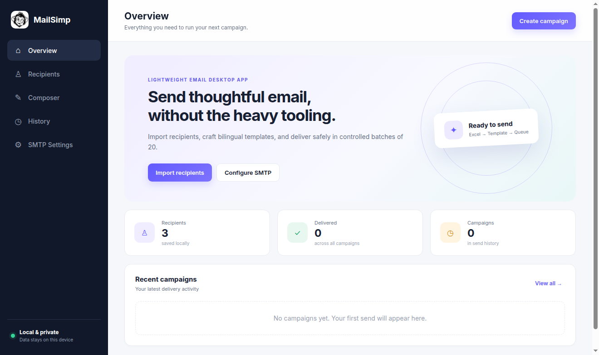

Spreadsheet import
Preview columns from XLSX and CSV files, validate addresses, and skip duplicates.
Free & open source · v__VERSION__
Import a spreadsheet. Personalize your HTML. Send through your own SMTP server. MailSimp keeps the workflow focused and your campaign data on your computer.
Windows, macOS, and Linux · MIT licensed

A short path from list to sent
Import XLSX or CSV, choose the email column, and keep every other field for personalization.
Build bilingual HTML email and place spreadsheet values in the subject or body with simple {{variables}}.
Test your SMTP configuration, confirm the audience, and process delivery in paced batches of 20.
Useful by design
MailSimp concentrates on the parts that matter: clean imports, flexible templates, controlled delivery, and inspectable results.
Preview columns from XLSX and CSV files, validate addresses, and skip duplicates.
Use any spreadsheet header as a subject or HTML variable, including Unicode names.
Write English or Persian email with RTL support and a responsive starter template.
Inspect the email while you work before anything reaches a recipient.
Connect your own SMTP service and send a real test message before a campaign.
Review campaign history plus individual success and failure details in the app.
The actual desktop app
Download MailSimp v__VERSION__
Choose a Windows, macOS, or Linux package. Every GitHub release includes SHA-256 checksums.
Release notes and checksumsClear answers
MailSimp is a free, open-source Windows and Linux desktop app for importing spreadsheet recipients and sending personalized HTML email through your own SMTP server.
No hosted MailSimp account or service is required. Recipients, templates, settings, and campaign history are stored in a local SQLite database on your computer.
MailSimp imports XLSX and CSV files. You select the email column; every remaining column is available as personalization data.
No. You are responsible for consent, unsubscribe handling, applicable anti-spam and privacy rules, provider limits, and the content you send.